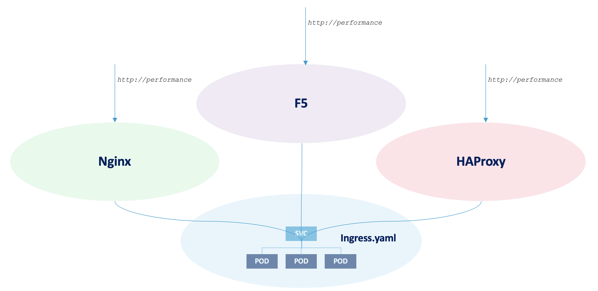

git clone https://github.com/cloudadc/container-ingress.git
cd container-ingress/performance/Container Ingress Performance
Table of Contents
Set up
1. Get Code
2. Install nginx ingress controller
kubectl apply -f ns-and-sa.yaml
kubectl apply -f rbac.yaml
kubectl apply -f default-server-secret.yaml
kubectl apply -f nginx-config.yaml
kubectl apply -f vs-definition.yaml
kubectl apply -f vsr-definition.yaml
kubectl apply -f ts-definition.yaml
kubectl apply -f nginx-ingress.yaml
kubectl apply -f nginx-ingress-nodeport.yaml3. Install F5 container ingress service
kubectl create ns bigip-ctlr
kubectl create secret generic bigip-login --from-literal=username=admin --from-literal=password=admin.F5demo.com -n bigip-ctlr
kubectl create serviceaccount bigip-ctlr -n bigip-ctlr
kubectl apply -f rbac-cis.yaml
kubectl apply -f cis.yaml4. Install HAProxy controller
kubectl apply -f haproxy-ingress.yaml5. Verify the installation
$ kubectl get ns
NAME STATUS AGE
bigip-ctlr Active 5m
haproxy-controller Active 5m
nginx-ingress Active 5mPerformance Comparision Test
Software Used
-
wrk4.1.0 -
k8s1.15.12, one master two worker, 6 vCPU 12 GB(each node 2 vCPU 4 GB) -
CentOS Linux7.8.2003 -
nginx/nginx-ingress:1.7.2 -
f5networks/k8s-bigip-ctlr:2.0.0 -
haproxytech/kubernetes-ingress:latest -
kylinsoong/cafe:1.0
Topology
The topology looks like below diagram:

The cafe application have 3 replicas are used as performance comparision application, the k8s ingress object are created, use the following command to deploy performance comparision application:
kubectl apply -f app-deploy.yaml
kubectl apply -f app-ingress.yamlThere are 3 ingress controller deployed, F5, Nginx and HAProxy, refer to above Set up section for details. The Ingress controller will take aware of the created k8s ingress object and make a amendment of controller controll panel settings to be ready for the incoming request:
-
F5 will add a Policy rule to exist Virtual server and add a Pool with 3 pool members refer to the 3 POD of
cafeservice -
Nginx will add a config file under
/etc/nginx/conf.d/which contains server and upstream settings, the upstream contains 3 servers refer to the 3 POD ofcafeservice -
HAProxy will update the configuration files that add a frontend and a backend, the backend contains 3 servers refer to the 3 POD of
cafeservice
Metrics Collected
There are 3 metrics are collected, RPS, TPS and Throughput,
-
Requests per second (RPS) - The number of requests the IC can process per second, averaged over a fixed time period.
-
Transactions per second (TPS) - The number of new HTTP connections the IC can establish and serve per second, averaged over a fixed time period.
-
Throughput – The data transmission rate that IC is able to sustain while processing HTTP requests for static content over a fixed time period.
There are 3 groups of metrics are collected, each for a different IC, the below commands are are use to collect metrics:
wrk -t 6 -c 100 -d 180s http://perftest01.example.com/coffee
wrk -t 6 -c 100 -d 180s -H 'Connection: Close' http://perftest01.example.com/coffeeResults
Results
Type,RPS,TPS,Throughput
F5,14216,514,5.10
Nginx,3815,278,1.36
HAProxy,6569,274,2.20Requests per second (RPS)

Transactions per second (TPS)

Throughput

Journals
./wrk -t 6 -c 100 -d 180s http://perftest01.example.com/coffee
Running 3m test @ http://perftest01.example.com/coffee
6 threads and 100 connections
Thread Stats Avg Stdev Max +/- Stdev
Latency 6.79ms 2.50ms 43.36ms 80.22%
Req/Sec 2.38k 196.42 2.95k 74.06%
2559718 requests in 3.00m, 0.90GB read
Requests/sec: 14215.71
Transfer/sec: 5.10MB
./wrk -t 6 -c 100 -d 180s -H 'Connection: Close' http://perftest01.example.com
Running 3m test @ http://perftest01.example.com
6 threads and 100 connections
Thread Stats Avg Stdev Max +/- Stdev
Latency 14.73ms 4.73ms 79.80ms 79.79%
Req/Sec 762.15 244.45 1.01k 85.54%
92481 requests in 3.00m, 42.36MB read
Socket errors: connect 96, read 0, write 0, timeout 0
Requests/sec: 513.57
Transfer/sec: 240.91KB
./wrk -t 6 -c 100 -d 180s http://perftest01.example.com/coffee
Running 3m test @ http://perftest01.example.com/coffee
6 threads and 100 connections
Thread Stats Avg Stdev Max +/- Stdev
Latency 28.04ms 27.88ms 1.03s 96.63%
Req/Sec 639.07 90.63 1.15k 70.78%
687099 requests in 3.00m, 245.69MB read
Requests/sec: 3815.10
Transfer/sec: 1.36MB
./wrk -t 6 -c 100 -d 180s -H 'Connection: Close' http://perftest01.example.com
Running 3m test @ http://perftest01.example.com
6 threads and 100 connections
Thread Stats Avg Stdev Max +/- Stdev
Latency 22.36ms 32.54ms 1.03s 99.57%
Req/Sec 554.09 162.35 767.00 88.63%
50056 requests in 3.00m, 14.46MB read
Socket errors: connect 96, read 0, write 0, timeout 0
Non-2xx or 3xx responses: 50056
Requests/sec: 277.93
Transfer/sec: 82.24KB
./wrk -t 6 -c 100 -d 180s http://perftest01.example.com/coffee
Running 3m test @ http://perftest01.example.com/coffee
6 threads and 100 connections
Thread Stats Avg Stdev Max +/- Stdev
Latency 14.97ms 7.95ms 251.38ms 79.14%
Req/Sec 1.10k 121.04 1.48k 68.66%
1182909 requests in 3.00m, 395.97MB read
Requests/sec: 6568.77
Transfer/sec: 2.20MB
./wrk -t 6 -c 100 -d 180s -H 'Connection: Close' http://perftest01.example.com
Running 3m test @ http://perftest01.example.com
6 threads and 100 connections
Thread Stats Avg Stdev Max +/- Stdev
Latency 19.63ms 19.60ms 1.03s 99.79%
Req/Sec 593.08 198.71 0.85k 88.60%
49289 requests in 3.00m, 10.95MB read
Socket errors: connect 96, read 0, write 0, timeout 0
Non-2xx or 3xx responses: 49289
Requests/sec: 273.69
Transfer/sec: 62.27KB